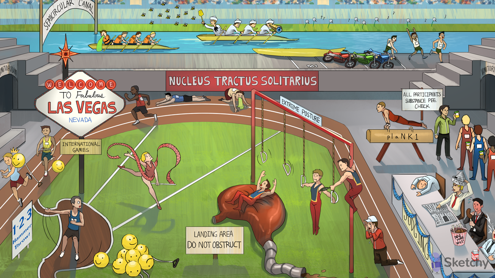

Solitary track runner: the nucleus tractus solitarius (NTS, or vomiting center) located in the medulla, receives inputs from the GI tract, vestibular system, and area postrema
Vomit on track: the NTS projects neurons to other medullary nuclei to coordinate the vomiting response
Stomach hammer throw area: the GI tract communicates directly with the NTS (via CN X)
Vegas sign at the stomach area: vagal afferents from the GI tract communicate with the NTS
Smiley hammer at the stomach area: GI irritation (due to infection, chemotherapy, distention) causes mucosal serotonin release
“1-2-3 Hammer Throw!”: serotonin activates 5HT-3 receptors on the vagal afferents
Semicircular canal: the vestibular system communicates directly with the NTS (via CN VIII)
Vests at the semicircular canal: the vestibulocochlear nerve (CN VIII) from the vestibular system communicates with the NTS
Seasick at the canal: the vestibular system cis responsible for vertigo and motion sickness (vestibular nausea)
Extreme postures next to the track: the area postrema (chemoreceptor trigger zone) is located adjacent to the NTS (outside the BBB in the 4th ventricle) and responds to emetogenic substances (e.g. chemotherapeutic agents)
Ribbon dancer blocking the Hammer Throw: ondansetron antagonizes 5HT-3 receptor on vagal afferents in the GI tract (treats chemo-induced or post-op vomiting)
Hammer tightening gut: ondansetron can cause constipation
Hammer hitting head: ondansetron can cause headache and dizziness
Twisted torsades streamer: ondansetron can prolong the QT interval and induce torsades
Pile of smiley faces: ondansetron can cause serotonin syndrome (symptoms include rigidity, tremor, hyperthermia, confusion)
Allergy inducing, Q shaped dandelions: the vestibular system contains H1 histamine receptors (coupled to Gq)
Bee swatters: 1st generation H1 receptor blockers (e.g. diphenhydramine, meclizine) treat vestibular nausea (motion sickness)
M1 motorcycle parking: the vestibular system contains M1 muscarinic receptors
Telescope: scopolamine (muscarinic antagonist) treats vestibular nausea (motions sickness)
Seasick sailor outfits: motion sickness (vestibular nausea) is treated with 1st generation H1 antagonists (e.g. diphenhydramine) and scopolamine (muscarinic antagonist)
2 D-ring ropes: the area postrema contains D2 receptors
Tickler blocking the D-rings: metoclopramide antagonizes D2 receptors in the area postrema (treats chemotherapy induced vomiting)
Contracted stomach: metoclopramide has upper GI prokinetic effects (useful for treatment of delayed gastric emptying due to post-surgical disorders and diabetic gastroparesis)
“Do not obstruct”: metoclopramide (D2 antagonist) is contraindicated in small bowel obstruction
Mud puddle: metoclopramide can cause diarrhea (prokinetic effect)
Sleeping judge: metoclopramide can cause drowsiness (central D2 blockade)
Crying coach: metoclopramide can cause depression (central D2 blockade)
EXTRA pyramidal newspaper hat: metoclopramide can cause extrapyramidal effects due to central D2 blockade (e.g. dystonia, akathisia, parkinsonian features)
Sticking out tongue: metoclopramide can cause tardive dyskinesia with chronic use (central D2 blockade)
Now More Spicy chicken: metoclopramide (D2 antagonist) can cause neuroleptic malignant syndrome (symptoms include fever, rigidity, mental status changes, autonomic instability, rhabdomyolysis)
Elevated milk release: metoclopramide can cause elevated prolactin levels (central D2 blockade)
Twisted torsades streamer: metoclopramide can cause QT prolongation and induce
torsades
PlaNK 1: the area postrema contains neurokinin 1 (NK1) receptors (activated by substance P)
“Substance pee check”: substance P binds NK1 receptors in the area postrema
“Participants”: aprepitant antagonizes the NK1 receptors in the area postrema (treats chemotherapy induced vomiting)